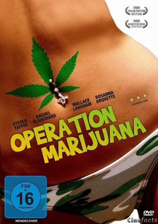

#5454 Operation Marijuana
 
 IMDB-Wertung: 6.3 / 10
IMDB-Wertung: 6.3 / 10  Metascore: 0
Metascore: 0 
Quinn ist gerade 18 geworden und war noch nie im Leben auf einer Schule. Weil seine Eltern, die ihr Geld als professionelle Hanfzüchter verdienen, von staatlichen Denkfabriken nämlich nichts halten. Nun ist man umgezogen, und Quinn findet Gefallen an der hübschen Nachbarstochter. Um ihr häufiger nahe zu sein, beschließt er, sich in der High School anzumelden. Für seine Mutter, die ihn bisher unterrichtete, bricht eine Welt zusammen. Quinn aber tut die Dosis Realität gut. Zumindest so lange, bis seine neuen Mitschüler vom Treiben seiner Eltern erfahren.
Jahr: 2008
Dauer: 99 Minuten
FSK: 16
Land: Kanada Studio: Edel Media & EntertainmentTonspuren:
Untertitel: Deutsch,
Auflösung: 1080p (1920x1080) Größe: 12083 MB
Genre: Drama, Komödie
Regisseur: Michael Melski
Drehbuch: Black Lagoon Committee
Soundtrack:
Darsteller:
- Steven Yaffee als Quinn
- Jon Cor als Philip
 Wallace Langham als Bryce
Wallace Langham als Bryce Rosanna Arquette als Diana
Rosanna Arquette als Diana- Katie Boland als Hope
- Denis Theriault als Shaun Leblanc
 Rachel Blanchard als Crystal
Rachel Blanchard als Crystal- Daniel MacIvor als Charles
- Alberta Watson als Marilla
- Hugh Thompson als Bowman
- Bill Carr als Mr. Slack
- Kate Lavender als Jasmine
- Darcie Cormier als Wood Sprite #1
- Nicole Maillet als Sky Pettigrew
- Brandon Ellis als Clay
- Jason Daley als Ryan
- Jacob Button als Stoner Kid
- David Vong als Student
Datei: X:\2008(N-Z)\Operation Marijuana (2008, FSK16, 1920x1080).mkv seit 02.02.2017
Festplatte: HD 2008(G-Z)-2009(A-F)
 Es gibt insgesamt 91 Filme in der Gruppe '2008(N-Z)'
Es gibt insgesamt 91 Filme in der Gruppe '2008(N-Z)'